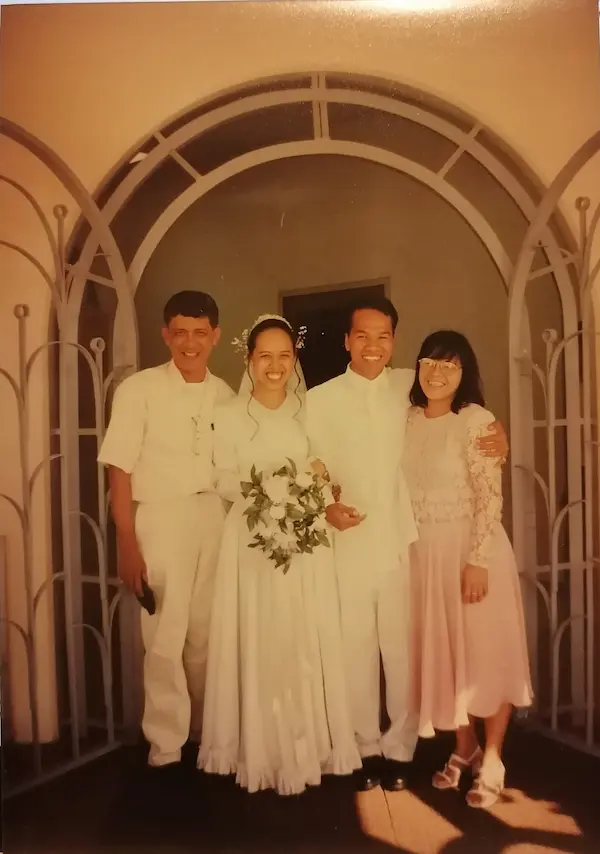

Meet the Parents
Samuel and Abigail Almeria, my parents got married in 1998 at the Manila temple. On my mother's side, my grandparents were able to attend, but on my father's side, they were not able to come. It was financially challenging for them to attend. If my memory is correct, Kakong, my grandfather, was not yet a memember of the church at that time.